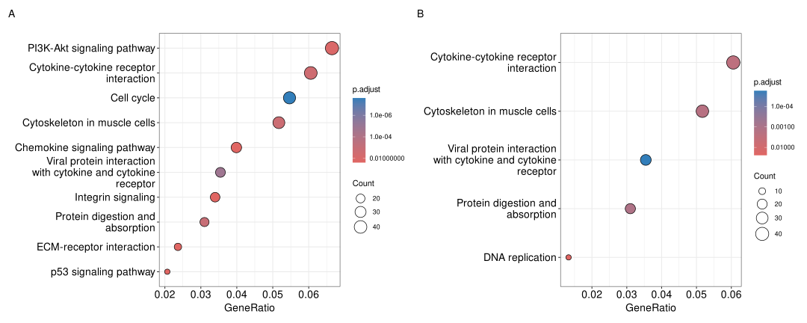
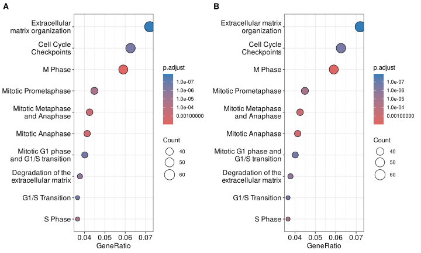

ids <- c("25081", "84604", "1.01E+08", "1E+08", "24614")
ids[!grepl("^[0-9]+$", ids)][1] "1.01E+08" "1E+08" GSEA analysis requires a ranked gene list, which contains three features:
If you import your data from a csv file, the file should contains two columns, one for gene ID (no duplicated ID allowed) and another one for fold change. You can prepare your own geneList via the following command:
d = read.csv(your_csv_file)
## assume 1st column is ID
## 2nd column is FC
## feature 1: numeric vector
geneList = d[,2]
## feature 2: named vector
names(geneList) = as.character(d[,1])
## feature 3: decreasing order
geneList = sort(geneList, decreasing = TRUE)Before blaming the annotation database, look at the IDs themselves. A very common cause of No gene can be mapped is that the ID column passed through a spreadsheet on its way into R. Excel quietly turns long numbers into scientific notation, and when the column is too narrow or the cell is formatted as a number it writes out the displayed text rather than the value. A gene list then arrives looking like this:
25081
84604
1.01E+08 <- should be an Entrez ID
1E+08 <- should be an Entrez ID
24614None of these can be mapped, and the failure is easy to misread as “clusterProfiler does not support my organism” — particularly when pasting the same list into DAVID seems to work, because DAVID re-parses the text differently.
Note that 1E+08 is not merely mis-formatted, it is lossy: the original identifier is gone and cannot be recovered. The fix is therefore not to repair the strings in R, but to re-export the IDs from their source.
A quick check in R — any ID that is not a plain integer is suspect:
ids <- c("25081", "84604", "1.01E+08", "1E+08", "24614")
ids[!grepl("^[0-9]+$", ids)][1] "1.01E+08" "1E+08" How to avoid it. Export the ID column as text: in Excel, format the column as “Text” before pasting the IDs in, or import via “Data → From Text/CSV” and set the column type to text. Then read it into R as character, e.g. readr::read_tsv(file, col_types = readr::cols(ENTREZID = "c")). Never round-trip identifiers through a spreadsheet’s default number formatting.
If the IDs are clean integers and the problem persists, the usual suspects are a mismatched keyType, an organism code that does not correspond to your IDs, or an outdated annotation source — see the two links above.
No gene can be mapped means the mapping step found nothing, which invites you to question your identifiers. But a download that never delivered usable annotation used to produce the same symptom, because an empty gene-set table simply maps nothing. Since clusterProfiler 4.21.2 the two are reported separately, so read the message before editing your gene list:
Failed to reach the KEGG REST API at '<url>'. The network is unreachable (connection failed, timed out or DNS lookup failed). ... Your IDs are fine; the machine could not reach KEGG (proxy, firewall, or a timeout on a large response).... the request returned HTTP status <code>. The KEGG REST API may have changed or is temporarily unavailable. Either KEGG retired that endpoint (this is how a KEGG API change shows up) or the service is down; updating the package or using a local database is the fix.... the response was empty. The requested data may not exist in KEGG ...No KEGG pathway annotation could be assembled for species '<x>': the downloaded gene/pathway table shares no ID with the pathway-name table. The download succeeded but the two halves did not line up, which again usually means the KEGG response format changed.Only if none of those appear should you suspect the identifiers themselves.
For an unstable or restricted connection, build the annotation once and reuse it locally instead of downloading on every run:
library(clusterProfiler)
createKEGGdb::createKEGGdb("hsa") # writes KEGG.db
x <- enrichKEGG(gene, organism = "hsa", use_internal_data = TRUE)By default, all the visualization methods provided by enrichplot display most significant pathways. If users are interested to show some specific pathways (e.g. excluding some unimportant pathways among the top categories), users can pass a vector of selected pathways to the showCategory parameter in dotplot(), barplot(), treeplot(), cnetplot() and emapplot() etc.
See Figure 39.1 for a side-by-side comparison of default top categories versus user-selected pathways.
library(clusterProfiler)
library(enrichplot)
data(geneList, package='DOSE')
de <- names(geneList)[abs(geneList)>1]
x <- enrichKEGG(de)
## show top 10 most significant pathways and want to exclude the second one
## dotplot(x, showCategory = x$Description[1:10][-2])
set.seed(2020-10-27)
selected_pathways <- sample(x$Description, 5)
selected_pathways[1] "Protein digestion and absorption"
[2] "Viral protein interaction with cytokine and cytokine receptor"
[3] "Cytokine-cytokine receptor interaction"
[4] "DNA replication"
[5] "Cytoskeleton in muscle cells" p1 <- dotplot(x, showCategory = 10, font.size=14)
p2 <- dotplot(x, showCategory = selected_pathways, font.size=14)
aplot::plot_list(p1, p2, tag_levels = "A")
Note: Another solution is using the filter verb to extract a subset of the result as described in Chapter 16.
id <- x$ID[1:3]
id[1] "hsa04110" "hsa04061" "hsa04974"x[[id[1]]] [1] "9133" "4174" "1111" "898" "991" "6502" "9134" "4171" "701"
[10] "699" "81620" "890" "993" "1869" "990" "9212" "9700" "23594"
[19] "9319" "9232" "5347" "26271" "4998" "4085" "7272" "1029" "891"
[28] "4173" "7043" "994" "5111" "983" "4175" "4609" "8318" "10403"
[37] "10926"geneInCategory(x)[id]$hsa04110
[1] "9133" "4174" "1111" "898" "991" "6502" "9134" "4171" "701"
[10] "699" "81620" "890" "993" "1869" "990" "9212" "9700" "23594"
[19] "9319" "9232" "5347" "26271" "4998" "4085" "7272" "1029" "891"
[28] "4173" "7043" "994" "5111" "983" "4175" "4609" "8318" "10403"
[37] "10926"
$hsa04061
[1] "11009" "6387" "6347" "6373" "6352" "6362" "3576" "6364" "57007"
[10] "10563" "1230" "2921" "3627" "3561" "1236" "4283" "9547" "6351"
[19] "6355" "3559" "53832" "1237" "1524" "3572"
$hsa04974
[1] "1294" "5645" "1359" "59272" "7373" "1281" "2006" "50509" "1296"
[10] "477" "1292" "1300" "6505" "1289" "1308" "1307" "1290" "1299"
[19] "1360" "23428" "1287" Most of the functions in enrichplot can automatically split long labels across multiple lines. Users can passed a line width to the label_format parameter (default is 30). It also supports user defined function to format label strings.
See Figure 39.2 for examples of wrapping long axis labels using numeric width and a custom labeller.
library(ReactomePA)
y <- enrichPathway(de)
p1 <- dotplot(y, label_format = 20)
p2 <- dotplot(y, label_format = function(x) stringr::str_wrap(x, width=20))
cowplot::plot_grid(p1, p2, ncol=2, labels=c("A", "B")) 
The label_format option works with barplot(), dotplot(), heatplot(), treeplot and ridgeplot().
Users often find that a significant portion of their gene list is dropped in the KEGG enrichment analysis. For example, a user reported that only 281 genes were retained from a list of over 700 genes.
This is not a software issue but rather a reflection of the database coverage. KEGG pathways mainly focus on metabolic and signaling pathways, and many genes are not annotated in any KEGG pathway.
We can verify the annotation coverage using bitr_kegg():
# gene is a vector of gene IDs (e.g., Entrez IDs)
kk <- bitr_kegg(geneID = gene, fromType='ncbi-geneid', toType='Path', organism='hsa')The warning message will indicate the percentage of genes that failed to map.
To manually verify a specific gene, you can visit the KEGG website using a URL constructed with the organism code and gene ID, for example: http://www.genome.jp/dbget-bin/www_bget?hsa:100506775. If the gene page does not list any pathway, it means the gene has no KEGG pathway annotation.
Network-backed examples are optional evidence or knowledge acquisition steps; they are not substitutes for checking the local input and statistical design. A failure to reach a service should not be reported as a failed enrichment test.
| Service or resource | Typical use | Record | Local or offline fallback |
|---|---|---|---|
KEGG REST / enrichKEGG() |
Pathway and module mappings, ID conversion | Organism code, endpoint, access date, response status, package version, and mapping coverage | Build and reuse a local KEGG database with createKEGGdb, or use a saved GSON resource where appropriate. |
| Pathview / KEGG diagrams | Render a pathway diagram with gene-level values | KEGG release or endpoint, Pathview version, license constraints, and input IDs | Keep the enrichment table and exported input values; render again when the service is available. |
| Reactome, WikiPathways, g:Profiler, enrichR, WebGestalt | External knowledge or result import | Source URL, query parameters, database release, access date, and returned schema | Reuse a saved result table or convert a complete local table with the import constructors. |
biomaRt, AnnotationHub, and GOA downloads |
Identifier or annotation acquisition | Host/release, query, access date, species, and package version | Cache the downloaded mapping or freeze it as TERM2GENE/TERM2NAME or GSON. |
For any remote call, distinguish these cases:
The reproducible record should include the exact downloaded or serialized resource when redistribution permits it. If the resource cannot be redistributed, retain its accession, release, access date, query, checksum where possible, and the mapping counts used in the analysis. The reproducible report provides the delivery checklist; the KEGG chapter and external-result import chapter show the corresponding APIs.